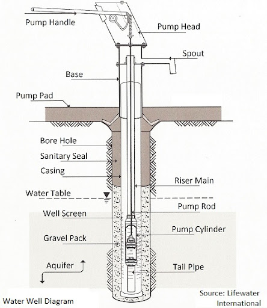

Water Well Design
Part I: Fundamentals, Classification & Planning
Topic Coverage:
- Open vs. Tube Wells
- Deep vs. Shallow Aquifers
- Design: Diameter Selection
- Design: Depth Criteria
1. Fundamentals
Introduction to groundwater abstraction, well technology basics, and components.
2. Classification
Detailed analysis of Open Wells vs Tube Wells, including construction and suitability.
3. Aquifer Types
Distinction between Deep (Confined) vs Shallow (Unconfined) aquifers and their recharge.
4. Design Criteria
Selection of Well Diameter, Depth, Velocity constraints, and Well Development.
Definition
A water well is an excavation or structure created in the ground by digging, driving, boring, or drilling to access groundwater in underground aquifers. It is essentially a vertical hole that penetrates the water-bearing strata.
Primary Objectives
To obtain a required quantity of water from an aquifer economically and sustainably.
- Safe: Bacteria and chemical free.
- Sand-free: To protect pump impellers.
- Long Life: Structural integrity > 20 years.
Schematic of vertical groundwater abstraction
Wells are primarily classified based on their construction method, depth, and entry method. The two broad categories are:
1. Open Wells
"Dug Wells"
- Depth: Shallow (< 20m)
- Diameter: Large (1m to 10m)
- Method: Excavation
- Storage: High internal storage
2. Tube Wells
"Drilled Wells"
- Depth: Deep (up to 500m+)
- Diameter: Small (100mm to 600mm)
- Method: Drilling/Boring
- Storage: Negligible (Continuous flow)
Construction Details
Open wells tap into the uppermost permeable layer (shallow aquifer). They derive water from the sides and the bottom.
- 1. Katcha Well: Temporary, unlined holes. Collapse easily. Used for temporary irrigation.
- 2. Pucca Well: Permanent, lined with brick masonry, stone, or precast concrete rings to prevent collapse.
- 3. Dug-cum-Bore Well: An open well with a small bore driven at the bottom to tap a deeper layer.
Advantages
- Low technology; constructed by local labor.
- Storage capacity allows for low-yield aquifers (water accumulates overnight).
- Easy to clean and maintain visually.
Disadvantages
- Hygiene: High risk of contamination from surface runoff.
- Stability: Prone to drying up during droughts.
- Space: Occupies valuable surface land area.
- Yield: Limited (typically 3-5 liters/sec).
Construction Features
A long pipe is sunk into the ground, consisting of Blind Pipes (in non-aquifer zones) and Screens/Strainers (in aquifer zones).
- 1. Strainer Type: Uses wire mesh or slotted pipe. Most common for alluvial soil (sand).
- 2. Cavity Type: No screen. Draws water from the bottom of a hard clay layer.
- 3. Slotted Type: Used in hard rock areas; simply slots cut into the pipe.
Advantages
- Taps deep, confined aquifers (Safe & Pure water).
- High yield possible (up to 200 liters/sec).
- Perfect sanitary sealing possible.
- Continuous supply throughout the year.
Disadvantages
- Requires skilled labor & heavy machinery (Rigs).
- High initial capital cost.
- If the pump fails, water supply stops instantly (no storage).
| Feature | Open Well | Tube Well |
|---|---|---|
| Yield | Low (3-6 L/s) | High (up to 200 L/s) |
| Depth | Shallow (< 20m) | Deep (> 20m) |
| Sanitary Purity | Poor (Open to air) | Excellent (Sealed) |
| Construction | Manual / Masonry | Drilling Rig |
| Drought Reliance | Fails easily | Reliable |

A typical deep tube well consists of a long column of pipes sunk into the ground, comprising both blind pipes and perforated screens.
1. Housing Pipe (Casing)
Definition: The un-perforated (blind) pipe lining the upper part of the borehole, typically in the non-water-bearing or poor-quality strata.
Functions:
- Retains the sides of the borehole against collapse.
- Houses the pump assembly (Bowl assembly) and column pipe.
- Seals off unstable soil layers and polluted shallow water.
Materials: Mild Steel (MS), PVC, or Stainless Steel (for corrosive waters).
2. Well Screen (Strainer)
Definition: The intake section of the well assembly placed opposite the water-bearing aquifer.
Functions:
- Allows water to enter the well while structurally supporting the aquifer formation.
- Prevents sand entry (Sand Control).
- Reduces entrance velocity to prevent head loss and incrustation.
Types: Slotted pipe, Wire-wound (Johnson screen), Bridge slot.
3. Sanitary Seal (Grouting)
Definition: A layer of neat cement slurry or bentonite injected into the annular space between the casing pipe and the drilled hole walls.
Functions:
- Protection: Prevents surface runoff or shallow contaminated water from flowing vertically down the outside of the casing.
- Structural: Adds stability to the upper casing.
Critical for protecting deep, pure aquifers from pollution.
The Screen Slot Size is carefully selected based on the grain size analysis of the aquifer material (typically retaining 40-50% of the natural formation).
4. Gravel Pack
Definition: Graded granular material (clean, rounded sand/gravel) placed in the annular space between the screen and the natural formation.
Functions:
- Primary Filter: Prevents fine sand from entering the screen.
- Permeability: Increases the effective hydraulic diameter of the well.
- Support: Stabilizes the borehole wall.
5. Bail Plug / Bottom Plug
A short section of blank pipe closed at the bottom. It seals the well and provides a sump for fine sediment to settle without blocking the screen.
6. Well Cap / Top Cap
A cover placed on top of the casing at ground level to prevent the entry of foreign material, animals, or malicious tampering.
An aquifer is a geologic formation that contains water in quantities sufficient to support a well. The classification into "Deep" or "Shallow" is determined by the impermeable layers (aquicludes) rather than strict depth in meters.
Characteristics
- Location: The topmost water-bearing layer, bounded by the water table above.
- Recharge: Directly replenished by local rainfall and surface runoff (Vertical Recharge).
- Vulnerability: Highly susceptible to contamination from biological waste, pesticides, and sewage.
- Water Table: Fluctuates significantly with seasons; risk of drying up.
Key Design Note
Wells tapping shallow aquifers must include a sanitary seal (grouting) at the top to prevent surface water ingress.
Not recommended for large municipal supplies due to uncertain yield.
Characteristics
- Location: Located below at least one impervious layer (Confined).
- Protection: The impervious layer acts as a natural shield against surface pollutants.
- Yield: Generally consistent and reliable, unaffected by immediate seasonal changes.
- Pressure: Water is under pressure; water level rises in the well above the aquifer top (Piezometric surface).
Key Design Note: Casing Policy
When drilling for a deep aquifer, the upper shallow aquifers must be sealed off ("cased out") to prevent the mixing of poor quality shallow water with the deep fresh water.
Preferred source for public water supply schemes.
The diameter of a well housing pipe (casing) must be large enough to accommodate the pump bowl assembly with sufficient clearance (approx 5cm).
Factors Affecting Diameter
- 1. Yield Required: Higher yield ($Q$) requires larger diameter strainers to reduce entrance velocity.
- 2. Pump Size: The bowl assembly of submersible pumps dictates the minimum casing size.
- 3. Cost: Drilling cost increases significantly with diameter.
Recommended Casing Sizes
| Expected Yield (m³/hr) | Casing Diameter |
|---|---|
| Up to 50 | 150 mm (6") |
| 50 - 100 | 200 mm (8") |
| 100 - 200 | 250 mm (10") |
| 200 - 300 | 300 mm (12") |
Relationship: Yield vs Diameter
To prevent sand pumping and corrosion, the velocity of water entering the screen (Entrance Velocity) must be controlled.
The Critical Formula
Where:
- $V_e$ = Entrance Velocity
- $Q$ = Discharge (Yield)
- $A_o$ = Total Area of Openings in Screen
If $Q = 30$ L/s ($0.03$ m³/s) and Limit $V_e = 0.03$ m/s:
Required Open Area $A_o = 0.03 / 0.03 = 1$ m².
Why limit velocity?
-
Sand Pumping: High velocity drags sand particles into the well, which act as abrasives, damaging the pump impellers.
-
Incrustation: High velocity causes significant pressure drops near the screen, leading to precipitation of minerals (CaCO3) clogging the slots.
-
Corrosion: High velocity accelerates electrochemical corrosion of metal screens.
Determining the total depth ($H$) requires summing multiple vertical components to ensure continuous supply.
The Total Depth Formula
- $SWL$: Static Water Level (Depth from ground)
- $\Delta s$: Drawdown (Drop during pumping)
- $d_p$: Pump Submergence (Req. 2-3m)
- $C$: Seasonal Fluctuation Margin (3-5m)
Screen Placement Rule
Do not screen the entire aquifer thickness.
Guideline: Screen the bottom 70-80% of a confined aquifer, or bottom 30-40% of an unconfined aquifer.
What is it?
Well development is the process of removing fine sand, silt, and drilling mud from the aquifer area around the well screen to open up the water passages.
Objectives:
- Correct damage to the aquifer caused by drilling.
- Increase the porosity and permeability near the screen.
- Stabilize the sand formation (prevent sand pumping).
- Maximize Well Yield.
Common Methods
- Bureau of Indian Standards. (2003). IS 2800 (Part 1): Code of practice for construction and testing of tube wells. New Delhi: BIS.
- Driscoll, F. G. (1986). Groundwater and wells (2nd ed.). St. Paul, MN: Johnson Filtration Systems.
- Garg, S. K. (2010). Water supply engineering (Vol. 1). New Delhi: Khanna Publishers.
- Raghunath, H. M. (2007). Ground water (3rd ed.). New Delhi: New Age International.
- Todd, D. K., & Mays, L. W. (2005). Groundwater hydrology (3rd ed.). Hoboken, NJ: John Wiley & Sons.
- World Health Organization. (2006). Protecting groundwater for health: Managing the quality of drinking-water sources. IWA Publishing.
Thank You!
Questions & Discussions
Department of Civil Engineering